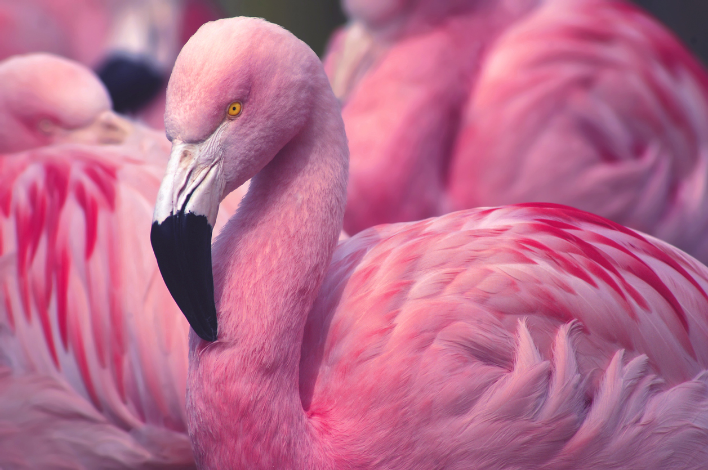
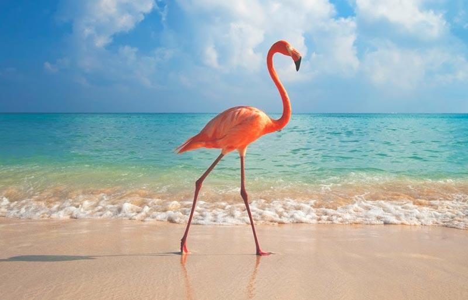

Los flamencos son aves con patas largas luchas y de un color rosáceo que los hace totalmente inconfundibles, pertenecientes a la familia de nombre científico phoenicopteridae (del género neonatas) que a su vez engloba un conjunto de aves tan conocidas como los Ibis, las cigüeñas y también las garzas.
Son aves que se caracterizan y son muy admiradas por su elegancia, ya que son aves muy esbeltas que pueden llegar a medir hasta un metro y medio. tienen unas patas muy largas con cuatro dedos y finas; el color de su pelaje es lo que mas llama la atencion ya que es color salmón o rosado rojizo. Tienen un cuello largo y su pico que es característico y que les sirve para urgar en el barro en busca de alimentos. La parte superior de su mandíbula es la unica que se mueve para que pueda alimentarse. Se alimentan de algas y crustáceos filtrando el limo. Su pico está preparado para poder separar el limo y el barro de los alimentos de los que se nutren.
Necesitan grandes extensiones de agua poco profundas, normalmente salina, salobre o alcalina. Se encuentran en todos los continentes, a excepción de Australia. Para su reproducción hacen los nidos de barro, con forma de tronco de cono, con la cima cóncava, donde ponen un único huevo blanco, como mucho pueden ser dos, que seran incubados durante 30 días aproximadamente.
